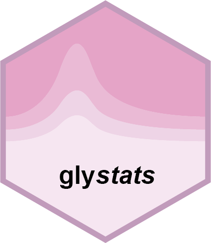

Abundance scales and automatic transformations
gly_scale.RdAbundance scales and automatic transformations
Details
The supported scales are "raw", "log" (natural logarithm), "log2",
and "log10". Missing scale metadata is treated as "raw" for compatibility
with older experiments. An explicitly supplied invalid scale is an error.
Older development objects labeled "log" must be relabeled if the data
were actually transformed with base 2 or 10. The base is never inferred.
With log_transform = NULL, known logged data are used unchanged. Raw data
retain the method's historical default: PCA, t-SNE, UMAP, PLS-DA, and OPLS-DA
use log(x + 1); differential tests, linear models, set tests, correlation,
and clustering use log2(x + 1e-6). ROC, Cox, and fold change use raw values.
For these last three methods, TRUE requests log2(x + 1e-6).
Results retain the input metadata in meta_data and describe the actual
analysis in preprocessing: input_scale, scale_missing,
requested_log_transform, log_transform (whether a new log was applied),
analysis_scale, and transformation. The input object is never modified.
Model estimates, standard errors, intervals, and raw fits use analysis units.
For raw inputs, fold changes retain log2(mean(test) / mean(reference)).
For logged inputs, log2fc is the difference of group means converted to
base 2: divide natural-log differences by log(2) and multiply base-10
differences by log2(10). This estimates a ratio of geometric means.
Differential tests calculate fold changes from the input scale independently
of the matrix used for testing. In gly_fold_change(log_transform = TRUE),
fold changes instead use the newly logged matrix, including its pseudo-count.
Limma contrasts on a logged analysis scale are converted to log2fc;
native model estimates and fits stay in analysis units. With an unlogged raw
limma analysis, contrasts are returned as estimate and log2fc is NA,
because an adjusted raw-scale difference is not a log fold change.
filter_sig_vars() then uses significance-only filtering by default and
rejects explicit fold-change cutoffs for these raw-scale limma results.
Examples
values <- matrix(c(1, 2, 4, 8), nrow = 1,
dimnames = list("feature", paste0("s", 1:4)))
exp <- SummarizedExperiment::SummarizedExperiment(
assays = list(abundance = log10(values)),
colData = S4Vectors::DataFrame(group = c("A", "A", "B", "B")),
metadata = list(scale = "log10")
)
res <- gly_fold_change(exp)
#> ℹ Ref Group: "A"
#> ℹ Test Group: "B"
res$tidy_result
#> # A tibble: 1 × 2
#> variable log2fc
#> * <chr> <dbl>
#> 1 feature 2
res$preprocessing
#> $input_scale
#> [1] "log10"
#>
#> $scale_missing
#> [1] FALSE
#>
#> $requested_log_transform
#> NULL
#>
#> $log_transform
#> [1] FALSE
#>
#> $analysis_scale
#> [1] "log10"
#>
#> $transformation
#> [1] "none"
#>